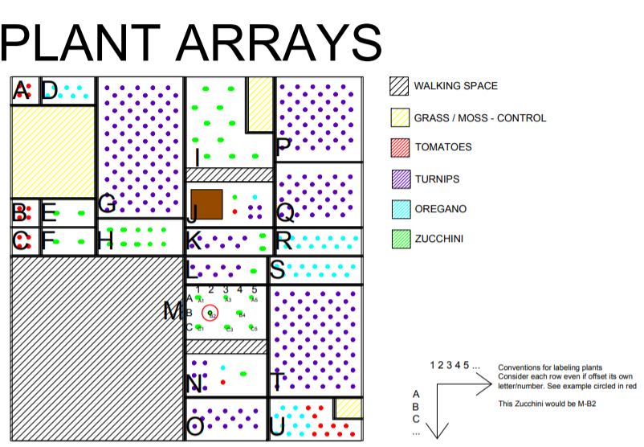

Geothermal Heated Garden

The geothermal heated garden allows plants to grow outside, that would otherwise not survive the weather conditions of Iceland. This idea was tested by comparing the growth of turnips, tomatoes, zucchini and oregano plants in heated beds and unheated beds. The data shows that...
Plant Growth
The interactive map can be used to see the growth of plants over time in both the heated beds and the unheated beds. Height as well as the two longest diameters/widths were measured on several dates in order to track the progress of the plants.
The Process
The Fence
3 layers, tension, rabbit fence, guy wires, zip ties, door, wind blocking
Preparing the Garden
Weeding, removing old soil, adding new soil, leveling the beds, pH, temperature profiles
Preparing the Plants
sowing the seeds, letting them germinate in the greenhouse
Planting
pattern to maximize number of plants, info about plants (how much space they need to grow, species), schematic of plants in garden
Heating System
water temperature, layout of pipes underneath soil/gravel
Tempus veroeros
Amet nibh adipiscing adipiscing. Commodo ante vis placerat interdum massa massa primis. Tempus condimentum tempus non ac varius cubilia adipiscing placerat lorem turpis at. Aliquet lorem porttitor interdum. Amet lacus. Aliquam lobortis faucibus blandit ac phasellus. In amet magna non interdum volutpat porttitor metus a ante ac neque. Nisi turpis. Commodo col. Interdum adipiscing mollis ut aliquam id ante adipiscing commodo integer arcu amet blandit adipiscing arcu ante.
Amet nullam interdum sed adipiscing
Sed lorem lobortis non auctor id, mattis ac quam. Donec dignissim venenatis justo, et semper enim imperdiet sit amet. Sed sodales, libero efficitur dapibus sodales, est libero ullamcorper est, vel viverra elit purus vel nunc. Cras lacinia urna id enim commodo, sed efficitur magna mollis. Quisque velit ligula, rutrum non elit sit amet, scelerisque laoreet lacus. Vivamus in viverra nulla, venenatis posuere dolor. Donec sed dolor non est tempor varius fermentum id enim. Cum sociis natoque penatibus et magnis dis parturient montes, nascetur ridiculus.
Magna sed porttitor eget lacus vel, mattis lobortis tortor. Cras sit amet nibh at justo egestas varius. Sed neque magna, sit amet urna eget, maximus ornare nibh. Nullam sit amet cursus erat, id pulvinar turpis. Phasellus nec sapien leo. Proin et ex sit amet eros consectetur mattis at sed magna. Aliquam fringilla, felis eget luctus sollicitudin, ante turpis vulputate risus, nec pharetra massa metus sed ligula.